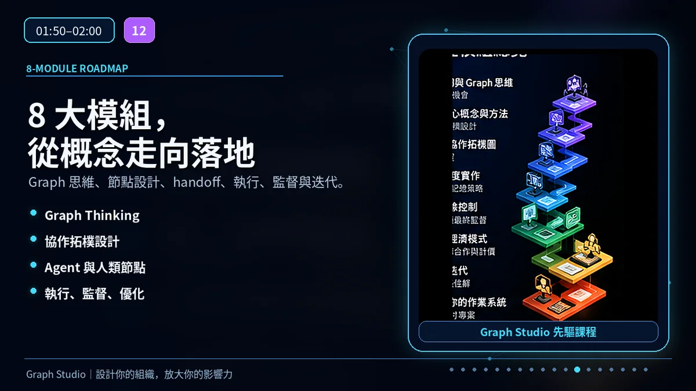
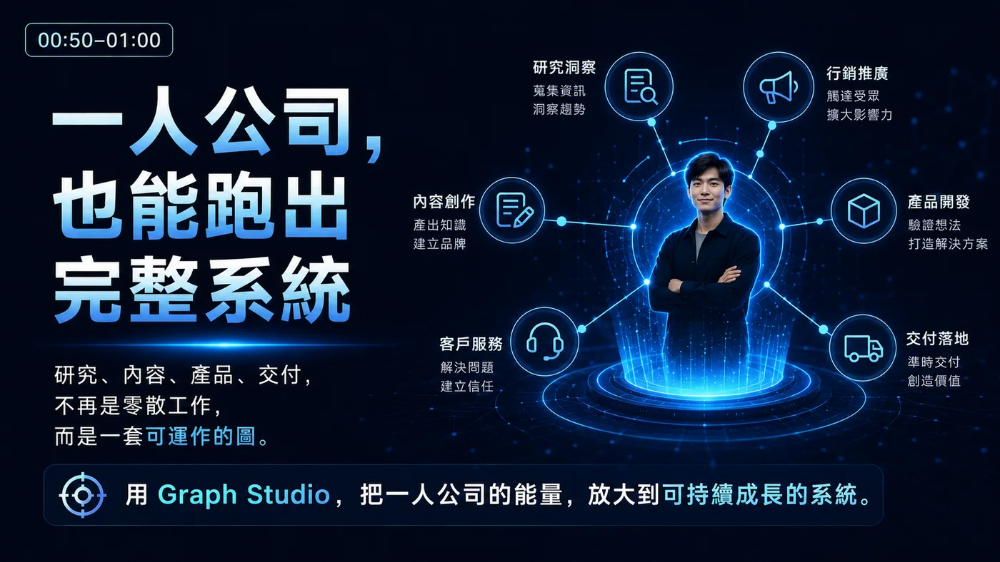
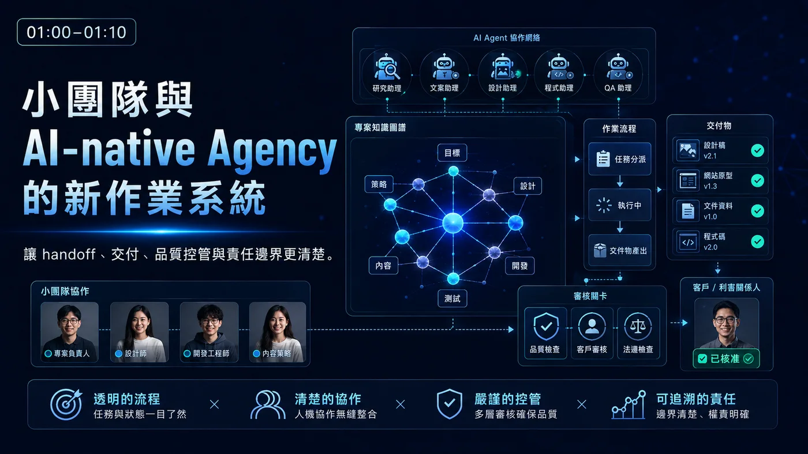
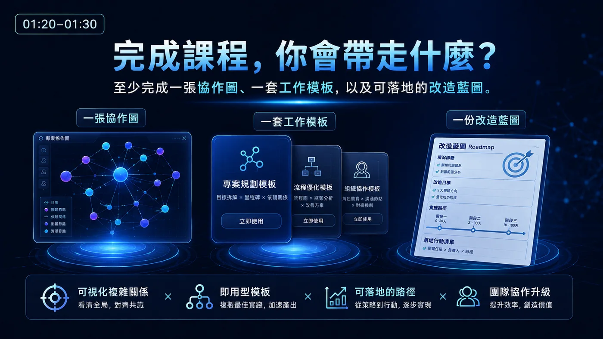

Prompt Engineering
告訴模型要做什麼，解決單次任務與輸出品質。
不是再學一個 AI 工具，而是從 Prompt 進化到 Graph：把目標、角色、任務、決策與審核，設計成一套真正能運作的人機協作系統。
問題不是工具不夠，而是工作、資訊、交接與責任，沒有被設計成一套可運作的系統。
Graph Studio 將組織與工作視為可設計的拓樸：誰存在、誰負責什麼、資料怎麼流動、在哪裡審核，以及失敗後如何重新路由。
告訴模型要做什麼，解決單次任務與輸出品質。
控制 Agent 看見什麼資料、規則、記憶與限制。
讓 Agent 能反覆執行、檢查、修正，直到達標。
設計多人、多 Agent、多閘門共同運作的完整系統。
定義目標、優先順序、資源與責任，並保留最終決策權。
負責研究、內容、分析、開發、行銷與日常執行。
在法律、品牌、產業與高風險節點介入，補足 AI 的判斷邊界。
將目標、角色、任務、輸入輸出、交付標準、預算與審核條件，轉成清楚的節點與關係。
比較不同 Agent 配置、審核密度與專家介入時機，預估成本、延遲、品質與風險。
建立 handoff、條件路由、平行分支、失敗重試與成果匯合，使協作不再只停留在流程圖。
設定品質閘門、風險升級、預算上限與最終放行，讓自動化保持速度，也保留責任與控制。
不是只有觀念，而是可以直接帶回工作現場的三項核心產出。
選擇一個真實工作場景，完成節點、關係、路由與審核設計。
把一次成功經驗轉成可重複、可交接、可擴張的組織資產。
排定第一個 wedge、導入順序、驗證指標與持續優化節奏。
循序建立 Graph Thinking、拓樸設計、Agent 調度、人類閘門與實戰運行能力。

課程不要求你先會寫程式；你可以依自己的工作型態，選擇最有價值的實作題目。

把研究、內容、產品、行銷、客服與交付，從零散任務整合成可持續運作的圖。

清楚定義客戶需求、Agent 執行、團隊審核、專家把關與最終交付。

讓跨部門資訊不再失真，將高頻任務交給 Agent，把關鍵決策留給人。
以你的真實工作場景為主題，逐步完成可使用的協作圖。
方法可對接不同 LLM、Agent、工作流與專案管理工具。
透過同儕案例、回饋與工作坊，看見不同產業的設計方式。
方法與案例會隨 Graph Studio 的研究、驗證與實務回饋持續演進。
請於匯款前再次核對銀行、帳號與戶名；後續核帳及報名確認方式，依主辦單位公告辦理。
加入 Graph Studio 先驅課程，從一個真實場景開始，把零散工具與任務轉成可執行、可監督、可持續優化的人機協作系統。
加入先驅預售・成為第一批實踐者